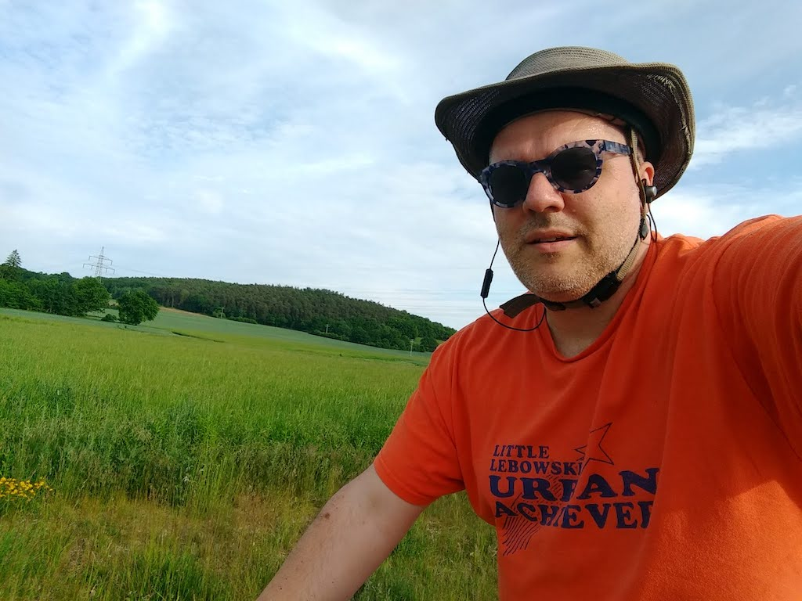
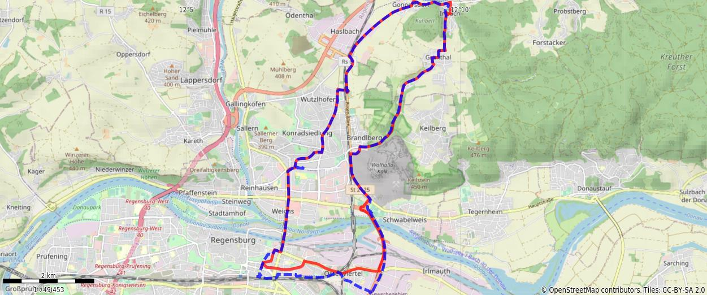

Jun 4, 2021
Thursday, June 3rd was Fronleichnam (“Happy Cadaver”). Most people I work with took Friday as a Brückentag (bridge day)…but not me. I worked a good chunk of a normal day, finishing what I wanted to achieve before next week, and headed out for an evening ride, on purpose shooting for about 20 km. I took a brand new (to me) route to the northeast heading through the Konradsiedlung, Wutzlhofen, on a tangent to Haslbach on my way to Irlbach. I looped around some neighborhoods on my way down a long, slow hill past Grünthal back down into Regensburg. The weather was ideal; quite the opposite of what I rode through a couple days later.

You might need to tap or click the map to make it bigger. The red solid route was my intention. The blue dashed route is my actual route.
Total Distance: 20.5 km
Time: 1:20
Calories: 890
Calories from fat: 19 %
Average Heart Rate: 130
Maximum Heart Rate: 159
Fat Burn: 0:18
Fitness: 1:02